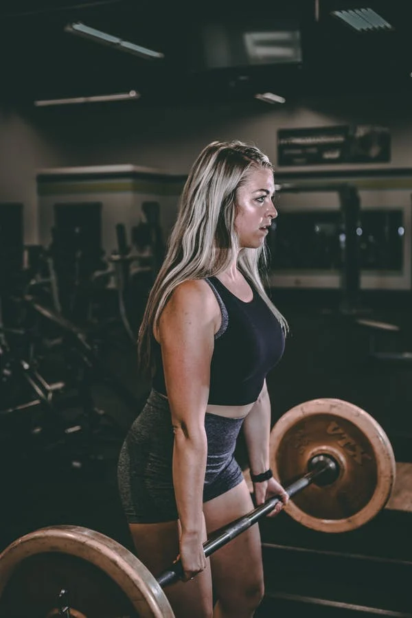
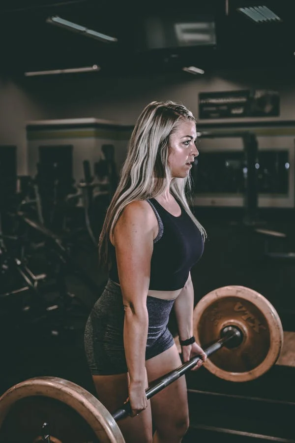
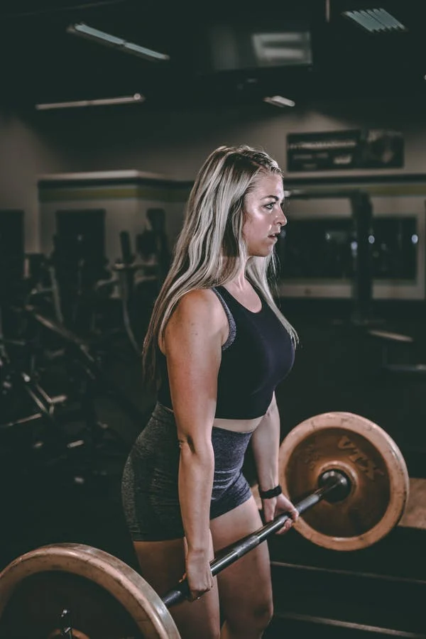

To build muscle you need the correct training plan and diet. This page is going to cover the correct training plan with some advice on optimising training.
To start you need to decide on what results you want when it comes to building muscle. This normally comes down to 3 choices hypertrophy (size), strength, or muscular endurance but there are more for certain types of athletes.
For hypertrophy we want a weight we can lift for 8-12 reps we aim for 3-5 sets with 1-2 mins rest between each set. this rep range is the optimum for putting on the most size/mass.
For strength training we want a weight we can only lift for 1-5 reps we aim for 3-5 sets with 3-5 min rest between sets.
For muscular endurance we want a weight we can lift for 14-20 times but no more than 20 otherwise it is too light exception to this rule would be body weight exercises we want to aim for 2-3 sets and 30-60 seconds rest between each set. This is best for tone
Additional advice would be to use compound movements, a compound movement is any exercise that use multiple muscles e.g., press up, pull up, squats, deadlift, lunges, bent over row, bench press, overhead press and leg press. Doing these exercises will get the most value for muscles used also you take less time in the gym.
Another tip would be to slow down the eccentric (lowering) phase of the movement e.g., while lowering the barbell to your chest during a bench press as this rip more muscle fibres as you are applying more resistance in the opposite direction the muscle is used to moving.
I have added some links to bodybuilding, powerlifting and strength training YouTube channels that I have found useful and entertaining.
Alan Thrall
Bodybuilding.com
Brain Alsruhe
Jeff Nippard
Jeremy Ethier
